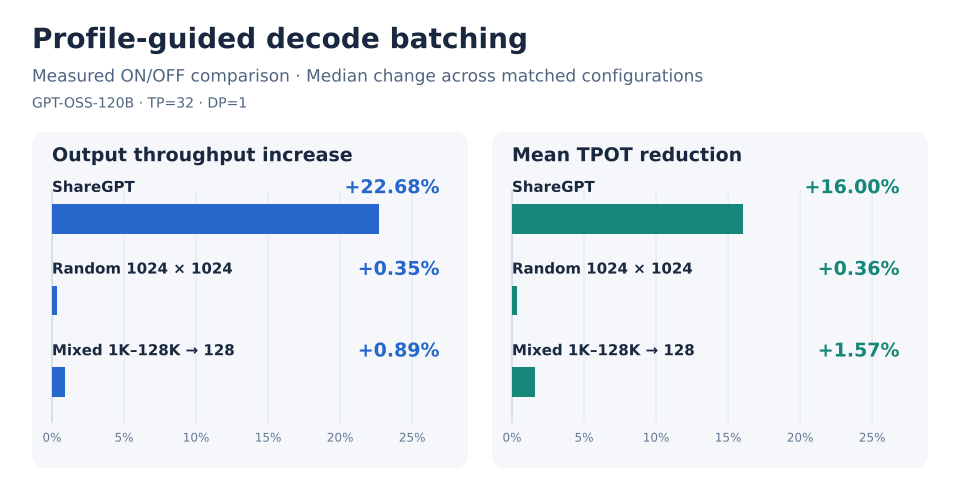

Furiosa SDK 릴리스 2026.4.0#
Furiosa SDK 2026.4.0 출시를 발표하게 되어 기쁩니다.
이번 릴리스는 실험적인 NPU 샘플링, 프로파일 기반 디코딩 배치, 실행 시간 오버헤드 감소, 컴파일러 최적화를 통해 전반적인 성능을 크게 향상시킵니다. 2026.3.0의 기본 성능(초기 베타 측정 포함)과 비교했을 때, 18개의 모델에서 토큰 생성 성능(출력 토큰/초/W)은 2~138% 향상되었습니다. 특히 MoE 모델(GPT-OSS-120B (+138%), GPT-OSS-20B (+57%), Qwen3-30B-A3B (+43%))에서 가장 큰 성능 향상을 보였습니다.
2026.3.0에 도입된 비전-언어 모델 지원이 정규 FCFS 스케줄러와 통합되어, 지속적인 배치 처리, 배치된 비전 인코딩, 채팅 턴 간 KV 캐시 항목 및 인코딩된 이미지 임베딩 재사용이 가능합니다.
2026.3.0에 도입된 KVConnector 인터페이스를 기반으로, 이번 릴리스는 실험적인 계층적 KV 캐싱(HiCache)을 추가합니다. HiCache는 NPU 메모리 외에 호스트 메모리와 선택적인 외부 공유 스토리지(Mooncake를 첫 번째 지원 스토리지 백엔드로)를 사용하여 프리픽스 재사용 범위를 확장합니다.
새로운 모델 지원에는 Gemma 4 및 EXAONE 4.5 (MTP)가 포함됩니다. 풀링 모델 라인업에는 BGE-M3, E5-Mistral, BGE Reranker v2 M3, Harrier OSS v1 (임베딩 및 재랭킹 워크로드)가 추가됩니다. 기존 모델 패밀리에는 Qwen3-VL 2B/4B 및 Mistral NeMo의 추가 변형이 포함됩니다.
마지막으로, 이번 릴리스는 더 이상 사용되지 않는 기존 모델 아티팩트 형식에서 FXB 기반 모델 로딩 및 실행으로의 마이그레이션을 완료합니다. (Legacy model artifact format)
2026.3에서 업그레이드하는 경우, 🚨 Breaking Changes & Deprecations 섹션과 FuriosaAI 소프트웨어 업그레이드 관련 내용을 반드시 확인하십시오.
주요 기능#
계층적 KV 캐시 오프로딩#
프리픽스 캐싱은 긴, 공유된 컨텍스트에 대해 반복적인 프리필을 방지하지만, 일반적인 캐시는 NPU DRAM 용량으로 제한됩니다. 캐시된 프리픽스가 제거되면, 동일한 프리픽스가 몇 분 전에도 사용되었더라도 나중에 요청 시 다시 계산해야 합니다.
2026.4는 실험적인 계층적 KV 캐시를 도입하여 NPU 메모리 이상의 프리픽스 재사용을 가능하게 합니다. 이 릴리스는 별도의 전역만 사용 가능한 캐시 및 하이브리드 프리픽스 캐시 구현을 단일 래디스 트리 구현으로 대체합니다. Global-attention 및 sliding-window KV 캐시는 독립적인 캐시 관리를 유지하면서 동일한 프리픽스 매칭 및 스케줄링 인프라를 공유합니다.
계층적 캐시는 다음과 같은 세 계층으로 이 단일 기반을 확장합니다:
L1 — NPU DRAM: 활성, 가장 낮은 지연 시간을 갖는 KV 블록으로, 직접적으로 어텐션에 사용됩니다.
L2 — 호스트 메모리: 제거되거나 미리 백업된 블록은 DMA를 통해 복사되어 재계산하는 대신 다시 로드할 수 있습니다.
L3 — 외부 저장소: 선택적 백엔드는 로컬 프로세스 메모리 외의 프리픽스를 유지합니다. 공유 백엔드는 클러스터 내의 다른 Furiosa-LLM 복제본에서 재사용할 수 있도록 합니다.
L3는 설계상 저장소에 독립적입니다. 백엔드에 독립적인 KV 캐시 연결 인터페이스는 캐시 관리를 백엔드 특정 존재 확인 및 데이터 전송과 분리합니다. 이 인터페이스를 통해 추가 저장 시스템을 통합할 수 있으며, 캐시 계층 구조를 변경하지 않고도 가능합니다. Mooncake는 첫 번째 지원되는 백엔드로, 콘텐츠 기반, 클러스터 전체 프리픽스 저장 및 스케줄러의 중요한 경로를 벗어난 비동기 전송을 제공합니다.
두 가지 쓰기 정책은 KV 캐시를 L2에 저장하는 시기를 결정합니다:
쓰기-통과: KV 캐시가 L1에 저장될 때마다 L2에 저장됩니다. L2 복사본을 유지하면 L1 블록을 제거하는 동안 전송이 필요하지 않습니다. 이는 충분한 NPU-호스트 대역폭과 호스트 메모리 용량을 갖는 배포에 적합합니다.
쓰기-백: L1에서 제거된 경우, KV 캐시를 L2로 씁니다. 복사 지연은 두 계층 간의 중복 저장량을 줄여, 호스트 캐시 용량이 제한되고 제거된 프리픽스에 더 많은 공간이 필요할 때 유용합니다. 이 작업은 제거 지연 시간을 증가시킬 수 있습니다.
어떤 정책을 사용하든, 스케줄러는 일치하는 프리픽스의 L1에 거주하는 부분을 재사용하고, 필요한 캐시된 접미부만 다시 로드합니다. 또한, 하이브리드 글로벌/슬라이딩 윈도우 어텐션 및 노드 내 파이프라인 병렬 처리와 함께 작동합니다. 실험적인 계층별 L2-to-L1 로드 경로는 호스트-to-NPU 전송과 모델 실행을 겹칠 수 있습니다; "Overlapping L2 Reload with Model Execution" 참조.
L2 계층을 활성화하려면, 프로세스 전체 호스트 메모리 예산을 할당합니다:
furiosa-llm serve <model> --experimental-kv-offload-host-memory-gb 64
대안으로, --experimental-kv-offload-host-memory-ratio는 각 모델 레이인의 L1 KV 용량에 상대적으로 L2 크기를 설정합니다. --experimental-kv-offload-write-through-threshold는 프로모션 히트 임계값을 제어합니다 (기본값: 2; 0은 프로모션을 비활성화). --experimental-kv-offload-write-back은 추가 쓰기-백 정책을 활성화합니다. 정책 및 구성 세부 정보는 "Hierarchical Prefix Caching" 참조.
이 특징은 실험적 기능 및 기본 설정 비활성화. 그것의 선택권은 deliberately에서 숨겨지습니다 furiosa-llm serve --help 정책 및 기본은 조정됩니다. 2026.4에 포함된 백엔드를 사용하면 L3는 호환 Mooncake 배포 및 shared-library 설치가 필요합니다. Mooncake를 Furiosa-LLM와 함께 사용하는 것을 지원 설정 및 네임스페이스 구성을 위해.
최적화된 멀티모달 서비스#
2026.3에 도입된 비전-언어 지원 기능이 이제 정규 FCFS 스케줄러에서 전체 과정을 처리합니다. 이를 통해 텍스트 기반 및 이미지-텍스트 기반 요청을 동일한 스케줄링, 프리픽스 캐시 및 데이터 병렬 인프라 하에서 통합합니다. 이전에는 별도의 프로토타입 루프를 사용했습니다.
멀티모달 요청 처리가 다음과 같은 세 가지 영역에서 최적화되었습니다:
배치형 비전 인코딩: 여러 요청의 이미지를 함께 인코딩하여 동시 부하 하에서 처리량을 향상시킬 수 있습니다.
겹치는 이미지 준비: 호스트에서 이미지 준비를 다른 요청의 NPU 텍스트 생성과 동시에 수행하여 NPU의 유휴 시간을 줄일 수 있습니다.
이미지 임베딩 재사용: 캐시된 이미지 임베딩을 대화 턴 및 데이터 병렬 (DP) 워커 간에 재사용하여 동일한 이미지에 대한 반복적인 비전 인코딩을 방지할 수 있습니다.
이러한 개선 사항은 현재 지원되는 모든 비전-언어 모델 (예: Gemma 4, Qwen3-VL, EXAONE 4.5)에 적용됩니다. 자세한 내용은 비전-언어 모델 참조.
확장된 모델 및 풀링 지원#
2026.4년에는 생성 및 검색 작업 모두에 대한 지원이 크게 확대됩니다:
Qwen3-VL — 기존의 32B 모델 라인에 추가되는 새로운 2B 및 4B Instruct/Thinking 모델.
Qwen3 Embedding — 기존의 8B 모델에 추가되는 새로운 0.6B 및 4B 모델.
Qwen3 Reranker — 기존의 8B 모델에 추가되는 새로운 0.6B 및 4B 모델.
Harrier OSS v1 — 0.6B 크기의 다국어, 지시어 기반 텍스트 임베딩 모델.
Mistral NeMo — 12B 파라미터의
Mistral-Nemo-Instruct-2407-FP8텍스트 생성 모델.BGE-M3 — 다국어 밀집 임베딩 모델.
BGE Reranker v2 M3 — 다국어 크로스-인코더.
E5-Mistral — 지시사항을 고려한
E5-Mistral-7B-Instruct임베딩 모델.Gemma 4 — 31B 규모의 텍스트 및 이미지 입력을 지원하는 비전-언어 모델.
EXAONE 4.5 — 33B 크기 비전-언어 모델로, 텍스트 및 이미지 입력을 지원합니다.
상담 지원 된 모델 FuriosaAI가 발행하고 검증하는 모델에 대해.
프로파일 기반 디코딩 배치#
프로파일 기반의 배치 디코딩은 실제 NPU 실행 및 I/O 비용을 프로파일링을 통해 측정하여, 다양한 컨텍스트 길이의 요청에 대한 디코딩 배치 및 버킷 선택을 최적화합니다. 원래 2025.3.0에서 선택적 기능으로 도입되었으며, 성능 개선 및 안정화 이후 2026.4.0에서 생성 모델에 기본적으로 활성화되었습니다.
GPT-OSS-120B 벤치 마크에 따르면 (TP = 32, DP = 1), 기능 증가 ShareGPT output-token throughput 미디어에 의해 22.7% 출력당 평균 시간 감소 token (TPOT) 미디어에 의해 16.0% 20개의 일치하는 구성에서. 이는 5개의 동시성 수준(16, 32, 64, 128, 및 256)과 prefix caching 켜기/끄기, 오버랩 스케줄링 켜기/끄기(5 × 2 × 2)를 결합합니다. 각 구성은 동일한 조건 하에서 활성화 및 비활성화된 기능을 비교합니다. 결과는 워크로드에 따라 다릅니다.


On the first model load, profiling may take 1–2 minutes. Subsequent loads reuse compatible cached profiles. To disable profiling and profile-guided batching, pass --no-profile-guided-decode-batching to furiosa-llm serve. See Profile-Guided Decode Batching for configuration details.
더 빠른 토큰 샘플링#
토큰 샘플링은 모델의 순방향 패스에서 생성된 로짓 점수를 사용하여 다음 토큰을 선택합니다. 선택은 greedy 선택 또는 top_k 및 top_p에 의해 제어되는 무작위 샘플링을 통해 이루어집니다. 선택된 토큰은 다음 디코딩 단계의 입력으로 사용되며, 이는 출력 토큰당 시간(TPOT)에 영향을 미치는 핵심 단계입니다. Furiosa SDK 2026.4.0은 이 프로세스에 두 가지 주요 개선 사항을 도입했습니다.
첫째, CPU 샘플링은 top-k 및 top-p 필터링에 더 빠른 알고리즘을 사용합니다. Qrita에서 영감을 받아, SIMD 명령어를 사용하여 BF16 로짓의 분포를 추정하고, 정확한 선택 전에 후보 집합을 좁힙니다. 필요에 따라 임계값을 완화하여 충분한 후보를 유지합니다. 패킷화된 정수 비교 및 부분 선택은 top-p 필터링 오버헤드를 더욱 줄입니다. 이러한 최적화는 기본적으로 활성화되며 추가 구성이 필요하지 않습니다. Greedy 샘플링은 별도의 argmax 경로를 사용합니다.
GPT-OSS-20B 및 EXAONE 4.0 모델의 로짓을 사용하는 벤치마크에서, top-k/top-p 필터링은 2.7–13.2배 더 빠릅니다. top_k=50 및 top_p=0.9인 ShareGPT 벤치마크에서, 동시성 수준이 16에서 256까지, 출력 토큰 처리량은 6.9–16.9% 향상되었고, 평균 TPOT는 6.5–15.4% 감소했습니다. 결과는 모델, 로짓 분포 및 워크로드에 따라 달라집니다.
둘째, NPU 샘플링은 토큰 선택 알고리즘을 NPU에서 직접 실행합니다. 호스트에서 배치 내의 요청 중 어떤 요청에도 호스트 메모리에 로짓이 필요하지 않을 때, 이는 전체 어휘 로짓을 호스트 메모리로 전송하는 것을 방지합니다. 배치된 NPU 실행은 토큰 선택을 요청 간에 병렬화하여, 더 큰 배치에 대해 CPU 샘플링 작업을 줄입니다.
마이크로벤치마크에서 Qwen3-MoE 배치 크기 128, NPU sampling 경로 최적화는 앞으로 통행과 NPU sampling 사이 지연을 감소시킵니다 는 1 ms에서 약 200 µs까지 소요샘플 토큰의 처리 및 호스트 600 µs에서 약 100 µs로 각 반복마다 decode
현재 지원되는 모든 생성 모델에 대한 기본 FXB 빌드는 샘플링 커널을 포함합니다. NPU 샘플링은 실험적이며 기본적으로 비활성화되어 있습니다. 다음 명령어를 사용하여 명시적으로 활성화할 수 있습니다:
furiosa-llm serve <model> --experimental-enable-npu-sampling
NPU sampling는 eager와 overlap 스케줄링과 함께 작동하며 모델의 스케줄링 제한을 적용하고 speculative decoding과 결합할 수 없습니다. 참조 실험적인 NPU 샘플링 구성 및 겹치기 기획 호환성
FXB로의 완전한 마이그레이션#
Furiosa SDK 2026.4.0은 더 이상 지원되지 않는 레거시 아티팩트 형식을 제거했습니다. 지원되는 모든 모델에 대한 컴파일된 NPU 커널은 이제 Furiosa 실행 가능한 묶음 (FXB)을 통해 제공됩니다.
2026.3.0에 도입된 FXB는 모델 가중치와 분리하여 컴파일된 커널과 해당 메타데이터를 단일 파일에 저장합니다. 서버 호스트에서 커널 컴파일 없이 모델을 시작할 수 있으며, 모델과 함께 묶음을 복사, 캐싱 또는 게시할 수 있습니다. 호환되는 미세 조정된 또는 가중치 업데이트된 모델은 동일한 FXB를 재사용하여 다시 컴파일할 필요가 없습니다.
모델 컴파일 및 컴파일된 커널의 재사용 및 배포를 더 쉽게 만들기 위해 FXB 도구를 지속적으로 개선할 것입니다. 묶기의 빌드, 실행 및 재사용에 대한 자세한 내용은 "Furiosa 실행 가능한 묶음 (FXB)"를 참조하십시오.
이 릴리스의 모든 변경 사항은 아래 "전체 변경 사항" 섹션에 요약되어 있습니다.
전체 변경 사항#
Furiosa-LLM#
주요 기능 및 개선 사항#
계층적 KV 캐시 (실험적)
NPU DRAM (L1) 및 호스트 메모리 (L2)를 포괄하는 계층 구조를 인식하는 Radix 캐시를 추가했습니다. 이 캐시는 비동기 DMA 오프로드, 재로드, 용량 추적 및 필요에 따라 항목 제거 기능을 제공합니다.
유용한 프리픽스가 NPU 캐시 재할당 시에도 살아남도록, 사전 쓰기 및 선택적 제거 시 쓰기 정책을 추가했습니다.
기존의 로컬 프리픽스 헤드와 더 긴 캐시된 접미부를 결합하여 불필요한 데이터 전송 및 프리필 재계산을 방지할 수 있습니다.
슬라이딩 윈도우 경계에 맞추고 모든 슬라이딩 윈도우 모델을 지원하는 보조/슬라이딩 윈도우 KV 오프로드 및 재로드 기능을 추가했습니다.
노드 내 파이프라인 병렬성을 사용하여 L1/L2 오프로드를 활성화했습니다.
호스트-NPU 데이터 전송 지연을 모델 실행 뒤에 숨기도록, 선택적으로 레이어별 L2-to-L1 재로드 오버랩을 활성화했습니다.
--experimental-kv-offload-staging-memory-gb(기본값: 24 GiB)를 사용하여 별도의 L3 호스트 스테이징 예산을 추가했습니다.크로스 프로세스 및 클러스터 전체 프리픽스 재사용, 네임스페이스 격리, 쓰-쓰루 백업, 전체 및 부분 프리픽스 사전 로딩, 그리고 비동기 크로스 프로세스 전송을 포함하는 Mooncake 기반 L3 티어를 추가했습니다.
Mooncake 라이브러리는
dlopen을 사용하여 런타임에 로드됩니다. 이 라이브러리는 Furiosa-LLM 휠에 포함되거나 링크되지 않으며, 라이브러리가 누락되면 L2만 작동합니다.
예비 디코딩 (실험적)
이중 스케줄러 프로토타입을 소유하는 단일 FCFS 스케줄러로 대체하여 대상 및 드래프트 모델 라인을 관리하고, 드래프트 토큰을 배치 단위로 검증합니다.
숨겨진 JSON 옵션
--experimental-speculative-config(별칭:--experimental-spec-config) 및 외부 드래프트 모델 및 내장 다중 토큰 예측 (MTP)에 대한 일치하는LLM구성을 추가했습니다.타겟/초안 쌍에 대한 토크나이저, 모델 인터페이스, 텐서 병렬 처리, 버킷 용량 및 I/O 메모리 유효성 검사를 추가했습니다. (토크나이저: 텍스트를 작은 단위로 분리하는 기능, 모델 인터페이스: 모델과 외부 시스템 간의 통신 인터페이스, 텐서 병렬 처리: 여러 GPU에서 텐서를 병렬로 처리하는 기술, 버킷 용량: 데이터 저장 공간의 용량, I/O 메모리 유효성 검사: 메모리 사용량을 검사하는 기능)
동일한 타겟 및 초안 레이아웃을 가진 비전-언어 모델에 대한 초기 자체 예측 지원을 추가했습니다. (자체 예측: 모델이 학습 데이터에서 정보를 추론하여 예측하는 기능)
EXAONE 4.5 FXB 빌드에 옵션 MTP 커널 컴파일을 추가했습니다.
fxb build모델 사전 설정 및 커널 플랜이 지원할 때 활성화합니다. 패스--no-enable-mtp그냥 놓아주면EXAONE 4.5 MTP를 서빙에 통합하고 외부 초안 모델 및 MTP 디코딩 모두에 대한 프리픽스 캐싱을 활성화했습니다. (프리픽스 캐싱: 자주 사용되는 데이터의 프리픽스를 캐싱하여 성능을 향상시키는 기술)
지원은 여전히 제한적입니다: 예측 디코딩은 겹치는 스케줄링, 계층적 KV 오프로딩, PD 분할, NPU 샘플링, 구조화된 출력 또는 로그 확률 요청과 함께 사용할 수 없습니다. 현재 MTP는 파이프라인 병렬 처리 1을 지원하며, MTP 프리픽스 캐싱은 공격적인 배치와 함께 사용할 수 없습니다.
멀티모달 서빙
Qwen3-VL의 텍스트 및 이미지 기반 서비스를 표준 FCFS 스케줄러 및 DP 라우팅 경로로 이동.
비전 인코더 배치 및 별도 인코더/디코더 NPU 작업 큐 추가.
NPU의 비활성 시간을 줄이기 위한 두 단계의 획득 및 인코딩/생성 흐름 추가.
콘텐츠 기반 미디어 ID 및 인코딩된 임베딩 레지스트리를 추가하여, 중복 이미지가 사전 처리 결과 및 NPU에서 생성된 비전 임베딩을 재사용할 수 있도록 함.
프리픽스 캐시 삽입 및 제거를 통한 다중 모달 토큰 고정 통합.
mRoPE 오프셋 계산, 청크별 프리필 아브트, 그리고 반복 페널티, 최소 길이, 프롬프트-로그프로 확률 샘플링 파라미터를 사용하는 다중 모달 요청에 대한 오류 수정.
모델 지원
Qwen3-VL 2B 및 4B 모델 (Instruct 및 Thinking 변형 포함) 추가.
Qwen3-Embedding 0.6B/4B/8B 및 Qwen3-Reranker 0.6B/4B/8B FXB 모델 서비스 추가.
Harrier OSS v1 0.6B 임베딩 추가.
Mistral-Nemo-Instruct-2407-FP8 추가.
동적으로 양자화된 FP8 Llama 3.1 8B 및 Llama 3.3 70B 모델 추가.
BGE-M3, BGE-reranker-v2-m3, E5-Mistral-7B-Instruct, EXAONE 4.5 33B, 및 Gemma 4 31B 추가.
엔진 코어#
로딩 및 메모리 효율성
동적 프로그래밍(DP) 인스턴스에 대한 모델 가중치를 병렬로 로드합니다.
RoPE 캐시와 같은 공유된 모델 버퍼 업로드를 EDF(Edge Deep Learning) 간에 중복 없이 처리합니다.
MoE(Mixture of Experts) 모델의 경우, 프로파일 기반 디코딩 배치 처리를 5배 더 빠르게 수행하기 위해, 불필요한 스케줄러-추정량화 단계를 줄여 메타데이터를 생성합니다.
LLM(Large Language Model) 및 서빙 경로 모두에서 기본적으로 I/O 버퍼 메모리를 런타임에 추정하도록 합니다.--max-io-memory-mb와 같은 명시적인 값을 유지할 수 있습니다.장치 메쉬에서 동적 메모리 창 크기를 설정하고, FXB(Flexible Batch) 경로에서 명시적인 I/O 메모리 설정을 유지합니다.
스케줄링 및 분산 서비스
측정된 컴퓨팅 및 입력 전송 비용을 기반으로 한 개선된 프로파일 기반 배치 디코딩, 캐시된 시작 프로파일 및 구성 가능한 스케줄러 CPU 예산을 사용합니다. (프로파일 기반 배치 디코딩: 프로파일 기반으로 배치 디코딩을 최적화하는 방식)
엄격한 배치 구성 개선 및 중복 스케줄러의 NPU 배포 경로에서 비필수 결과 처리를 분리했습니다. (Overlap Scheduling 참조)
프리픽스 캐시를 인식한 입실 허용 추정, 필요에 따른 제거, 그리고 추가적인 긴 컨텍스트 래디스 캐시 최적화를 추가했습니다.
초기 PD-disaggregation 커넥터 수명주기, 입학 신호, 취소 처리 및 전용 교정 테스트가 추가되었습니다. 공공 서빙 워크플로는 실험적이다. 배치 완료 라우팅, layer-group DMA/network 전송 파이프, 그리고 1 GB는 큰 KV 전송에 대 한 Chunking을 추가. Mooncake-backed PD 통합 개발 남아.
FXB 경로에서 노드 내부 파이프라인 병렬 처리를 활성화했습니다.
샘플링
분산 기반 후보 선택 및 패킷화된 정수 순서 최적화된 가속 CPU를 사용한
top_k/top_p샘플링.top-p 샘플링 중 고정된 BF16 누적 확률 정밀도 유지.
지원되는 생성 모델에 걸쳐 실험적인 NPU 샘플링 추가, 여기에는 구조화된 출력 마스크 및 출력 로그 확률 요청에 대한 호스트 백업 기능이 포함됩니다.
NPU 샘플러가 배치 내 모든 요청을 처리할 수 있는 경우 호스트 샘플링 루프 오버헤드를 줄이고 불필요한 로짓 전송을 건너뜻.
API 및 사용성 개선#
응답 API:
Harmony 출력 경로를 통해 gpt-oss에 대한
/v1/responses지원이 추가되었으며, 다중 턴 및 도구 호출 관련 문제 해결이 포함됩니다.Responses 요청에
structured_outputs가 추가되었으며,tool_choice,response_format,structured_outputs간의 충돌 시 명시적인 오류가 발생합니다.xgrammar 구조적 태그를 사용하여 gpt-oss 출력 개선이 이루어졌습니다.
구조화된 출력 및 추론:
추론 및 최종 콘텐츠 제약 조건은 이제 독립적인 structured-output 상태를 사용하며, 서로 다른 백엔드를 선택할 수 있습니다.
structured grammars 및 Python 프론트엔드와 관련된 취소 경쟁 문제가 수정되었습니다.
Gemma 4의 추론 및 도구 호출 파서 추가, 스트리밍 출력 처리 수정.
gpt-oss에 필요한 도구 선택 추가. 참조 GPT-OSS 제한 이유가 반환되지 않는 조건.
qwen3_xml도구 호출 파서 (별칭:qwen3_coder) 및 Qwen3-Coder 자동 도구 호출에 대한 출력 개선 기능 추가.
샘플링 API:
온라인 및 오프라인 생성에
stop및include_stop_str_in_output를SamplingParams에 추가. stop 문자열이 일치하면finish_reason="stop"으로 보고하고, 일치하는 값을stop_reason에 노출.점진적 디코딩에서 토크나이저의 공백 정리 기능을 비활성화하여 생성된 공백이 정확하게 유지되도록 함.
서비스 및 CLI:
--max-model-len옵션이 이제 프롬프트와 생성 텍스트의 최대 컨텍스트 길이를 활발하게 제한하며,/v1/models에 반영됩니다. 이를 통해max_tokens를 생략한 요청의 입실 동시성을 향상시킬 수 있습니다. 자세한 내용은 "컨텍스트 길이 제한" 참조.확장된 풀링 모델 세트에 대한 임베딩, 점수 및 재랭킹 엔드포인트 지원이 추가되었습니다.
무거운 파이썬 의존성을 지연 로드하여, 도움말 및 버전 명령을 거의 즉시 실행할 수 있습니다.
FXB 검사 및 빌드 요약 기능이 개선되었으며, 여기에는 MTP 및 비전 인코더 커널이 포함됩니다.
media_io_kwargs및mm_processor_kwargs를 통해 미디어 관련 옵션 및 요청 수준의 오버라이드를 추가했습니다. 자세한 내용은 "다중 모달 옵션" 참조.
버그 수정#
다중 턴 도구 호출 대화 및 다중 턴 응답 API 요청에서 gpt-oss 파싱 관련 버그 수정.
계층적 캐시 접근 시 발생하는 딜레이, 보조 캐시 재로드 동기화, 부분 프리픽스 재사용, 프리픽스 라우터 미러 일관성 관련 버그 수정.
비전-언어 샘플링 중 발생하는 패닉 및 다중 모달 위치-오프셋 처리 관련 버그 수정.
중단 문자 취소 정리 및 구조화된 출력 취소 시 발생하는 경쟁 조건 관련 버그 수정.
긴 컨텍스트에서 프롬프트 로그 확률 계산 시 호스트 메모리 고갈 문제 수정.
반복 징벌 오류를 수정하여, 각 고유 토큰에 대해 한 번만 징벌을 적용하도록 하여, 잘못된 로짓과 샘플링 실패를 방지합니다. (반복 징벌 오류 수정)
자동 FXB 검색 기능을 개선하여, 런타임 IR 버전과 호환되는 최신 묶음을 선택하도록 수정했습니다. (자동 FXB 검색 기능 개선)
텔레메트리 내보내기 성능을 개선하고, 텔레메트리 메모리 누수를 수정했습니다. (텔레메트리 성능 개선 및 메모리 누수 수정)
장치 런타임#
제너레이터 실행을 device-runtime2로 마이그레이션하여, 컴퓨팅 및 DMA를 명시적인 스트림 연산으로 표현하고, 이벤트 기반 의존성을 사용하도록 변경했습니다.
스트림 연산 호스트 오버헤드를 줄이고, 런타임의 DMA-BUF 인터페이스를 사용하여 중복된 호스트 버퍼 풀을 제거했으며, 불필요한 DMA 동기화 브래킷 및 컴퓨트-스트림 런칭 장벽을 제거했습니다.
계층적 장치 ID 처리 방식 업데이트 및 장치 실행 시 메모 누수, 그리고 비전-언어 NaN 오류를 해결했습니다. (업데이트된 계층적 장치 ID 처리 방식, 장치 실행 시 메모 누수, 비전-언어 NaN 오류 해결)
드라이버#
4 MiB를 초과하는 전송 설명자 배열에 대한 DMA-BUF 할당 실패를 수정하고, 원격 장치 메모리에 대한 동적 주소 매핑을 수정했습니다. (DMA-BUF 할당 실패 수정, 원격 장치 메모리에 대한 동적 주소 매핑 수정)
일시적인 펌웨어 업데이트 시간 초 오류를 수정하고, 대기 중인 장치 명령을 취소할 때의 안정성을 개선했습니다. (펌웨어 업데이트 시간 초 오류 수정, 대기 중인 장치 명령 취소 시 안정성 개선)
사용 중단된
pert_versionsysfs 속성을 제거했습니다. 이 속성을 읽는 사용자 정의 모니터링 스크립트는 업데이트해야 합니다. (사용 중단된 pert_version sysfs 속성 제거, 사용자 정의 모니터링 스크립트 업데이트 필요)
펌웨어#
간헐적인 펌웨어 업데이트 시간 초과 문제를 해결하고, 이전 펌웨어 버전과의 호환성을 개선했습니다.
펌웨어 진단 보고서에 수정 가능한 및 수정 불가능한 ECC 오류 수를 추가했습니다.
Furiosa SMI#
configuring device power limits에 대한 지원 추가
furiosa-smi power(뿌리 특전 필요). 구성한 제한은 다음과 같습니다.furiosa-smi info --format full보시다시피 Furiosa SMI CLI 세부사항을 알려주세요.CLI 출력 형식 업데이트:
info --format full은 이제 전력 제한 및 TCP 클럭 정보를 포함하며, 전력 값은 전체 와트 단위로 표시됩니다. 기본적으로status는 장치별 요약을 표시합니다. 개별 코어 사용률을 보려면--format full을 사용하십시오. "Liveness" 열은 제거되었습니다.legacy
furiosa-libsmi패키지는 더 이상 사용되지 않으며, 더 이상 유지 관리되지 않습니다.furiosa-smiCLI는 더 이상 설치가 필요하지 않습니다.
🚨 주요 변경 사항 및 기능 제거#
RNGD 드라이버 업데이트가 필요합니다:
Furiosa SDK 2026.4는 2026.4.0 버전의 RNGD 드라이버를 필요로 합니다. Furiosa-LLM 2026.4를 시작하기 전에
furiosa-driver-rngd를 업그레이드하십시오. 2026.3.x 버전의 드라이버를 계속 사용하면 부정확한 결과 또는 실행 시간 오류가 발생할 수 있습니다.이주다음으로: FuriosaAI 소프트웨어 업그레이드 driver를 업데이트하고 서빙 워크로드를 재시작하기 전에 설치된 버전을 확인합니다.
Furiosa SMI CLI 출력 변경:
기본 설정
furiosa-smi status출력은 이제 per-device 요약이며, Liveness 컬럼이 제거되었습니다.In
statusJSON/YAML 산출, 기억 분야는에서 이동했습니다memory.DRAMtomemory, 그리고liveness필드가 제거되었습니다.이주사용:
furiosa-smi status --format fullper-core 활용 및 파싱 스크립트 업데이트infoorstatus새로운 열과 힘 체재를 일치하기 위하여 테이블. JSON/YAML 소비자를 새롭게 하십시오memory.*그 대신memory.DRAM.*및 챗 컴플리션에 대한 의존성을 제거liveness.
기존 모델의 요소 및
furiosa-llm build제거:furiosa-models기반의 v2 아티팩트 경로 및 모델 리라이터가 제거되었습니다. Furiosa-LLM은 이제 FXB 런타임을 통해서만 모델을 로드합니다.이주: 교체
furiosa-llm build <model> ...과fxb build <model> <output>.fxb. 로컬 묶음을 제공하며furiosa-llm serve <model> --fxb <output>.fxb, 또는furiosa-ai이미 호환 FXB를 게시하는 Hugging Face 저장소.
실행 시 버킷 플래그 제거:
furiosa-llm serve에서 이전 버전에서 사용하던--max-batch-size,--min-batch-size,--max-prompt-len,--prefill-buckets/-pb, 및--decode-buckets/-db옵션이 2026.4.0에서 제거되었습니다.이주: 서버 실행 스크립트에서 이러한 옵션을 제거하십시오. 실행할 때 물통을 선택하십시오.
fxb build. runtime 스케줄링 제한을 위해, 사용--max-concurrencyand--max-num-batched-tokens적절한 경우
더 이상 사용되지 않는 beam-search 파라미터 제거:
use_beam_search,best_of,length_penalty, 및early_stopping이SamplingParams및 호환되는 요청 모델에서 제거되었습니다. Beam search는 SDK 2026.1 이후 지원되지 않습니다.마이그레이션: 이러한 필드를 제거하고 greedy 또는 random 샘플링 파라미터 (예:
temperature,top_k,top_p)를 사용합니다.
다음 CLI 및 Python 구성 변경 사항은 기존 런처 스크립트 및 애플리케이션의 업데이트가 필요합니다:
이전 옵션 또는 설정 |
2026.4에서 변경 |
마이그레이션 |
|---|---|---|
|
호환성을 위해 이름이 변경되었지만, 기존 alias는 유지됩니다. |
|
|
제거됨; 텐서 병렬성은 로드된 FXB 파일에 의해 처리됩니다. |
다음을 선택하십시오: |
|
사용되지 않는 스케줄링 설정이 제거되었습니다. |
CLI 인자, |
|
사용되지 않는 엔진 레벨의 seed 설정 제거. |
엔진 초기화 시 다음 인수를 제거합니다. |
|
명시적인 값은 양의 정수여야 합니다. |
0 또는 음수 값을 양의 제한 값으로 대체하거나, 설정을 제거합니다. |
명시적인 |
지원되지 않는 조합은 거부됩니다. |
|
📦 출시된 구성 요소#
Python 패키지#
패키지 이름 |
버전 |
지원되는 아키텍처 |
|---|---|---|
furiosa-kernels |
2026.4.0 |
순수 Python ( |
furiosa-kernels-contrib |
2026.4.0 |
순수 Python ( |
furiosa-llm |
2026.4.0 |
순수 Python ( |
furiosa-llm-native |
2026.4.0 |
|
furiosa-native-llm-common |
2026.4.0 |
|
furiosa-tcc |
2026.4.0 |
|
furiosa-torch |
2026.4.0 |
|
furiosa-smi |
2026.4.0 |
|
APT 패키지#
패키지 이름 |
버전 |
지원되는 아키텍처 |
|---|---|---|
furiosa-driver-rngd |
2026.4.0 |
|
furiosa-firmware-image-rngd |
2026.4.0 |
|
furiosa-firmware-tools-rngd |
2026.4.0 |
|
furiosa-smi |
2026.4.0 |
|
furiosa-metrics-exporter |
2026.4.0 |
|
furiosa-cdi |
2026.4.0 |
|
YUM 패키지#
패키지 이름 |
버전 |
지원되는 아키텍처 |
|---|---|---|
furiosa-driver-rngd |
2026.4.0 |
|
furiosa-firmware-image-rngd |
2026.4.0 |
|
furiosa-firmware-tools-rngd |
2026.4.0 |
|
furiosa-smi |
2026.4.0 |
|
furiosa-metrics-exporter |
2026.4.0 |
|
furiosa-cdi |
2026.4.0 |
|